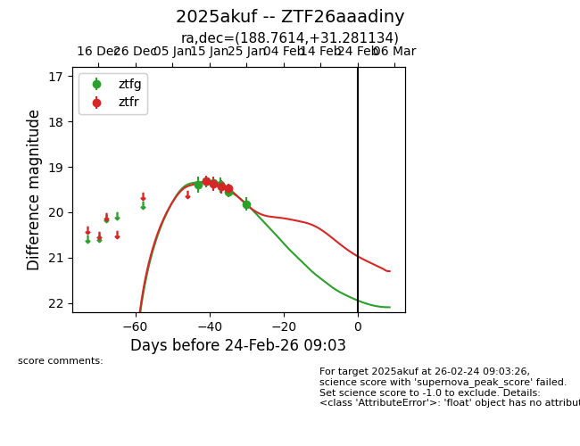
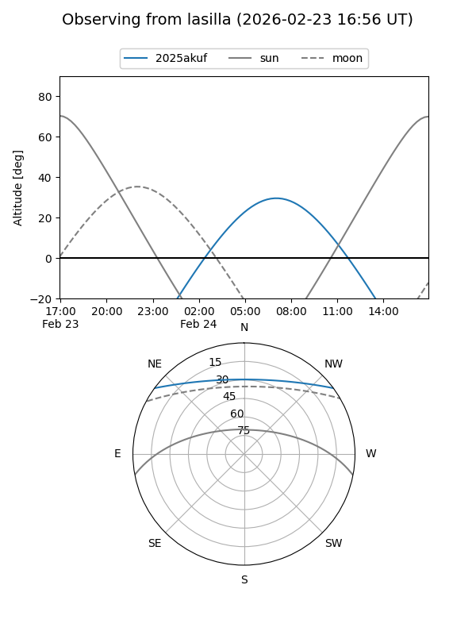
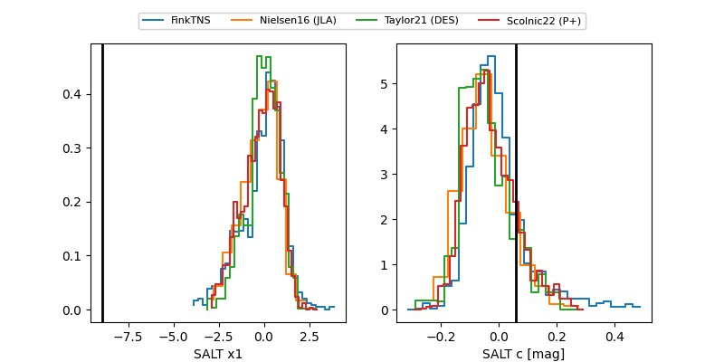

2025akuf
Target 2025akuf at 2026-01-26 22:46
Aliases and brokers:
FINK: link
Lasair: link
ALeRCE: link
TNS: link
YSE: link
alt names
ZTF26aaadiny (ztf,fink_ztf)
2025akuf (tns,yse)
Coordinates:
equatorial (ra, dec) = 188.7614,+31.28113
equatorial (HMS+DMS) = 12:35:02.73,+31:16:52.08
galactic (l, b) = (162.6901,+84.52000)
Flags:
Photometry:
last ztfg=19.81, ztfr=19.47
6 ztfg, 4 ztfr detections
Lightcurve

Visibility


Additional plots
